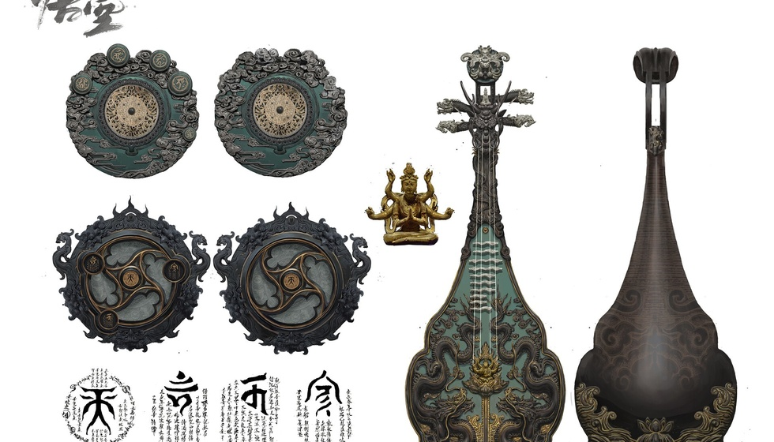

‘曹操’不是随便叫的！为何一段宣传片就能顶替十年研
深红色的屏幕上，鼠标划过几行“河南卫视官方背书”的字幕，却迟迟没有停在实机战斗演示的缩略图上。作为一名在三国战棋世界里摸爬滚打二十余年的老兵，当我看到这段仅几十秒的先导PV被冠以“3A大作”之名时，心里的兴奋瞬间变成了五味杂陈的抵触——这哪里是新的《曹操传》，分明是一场打着情怀幌子的流量收割游戏。这已经不只是个游戏新消息那么简单，更像是一场关于“国产单机到底该长啥样”的舆论风暴前夕。
说白了，咱老玩家心里跟明镜似的。一听说开发商是许昌那边刚成立没多久的文旅公司，主营业务还挂着食品经营、文具零售这些八竿子打不着的行当，那股子兴奋劲儿顿时凉了半截。真正的工业化巨兽，从来不会只靠几十秒的动画片段把自己伪装成钢铁洪流。行业里公认的3A标准，那可是百人以上团队花几年时间硬磨出来的，实机演示、开发日志、试玩Demo这些硬货一样都不能少。这里就得点破游戏圈那条不成文的规矩了——“Demo”和“PPT开发模式”压根儿是两码事，你把概念视频做得再炫、渲染得再漂亮，只要没跑起来实机画面，那就是在耍流氓。再看看咱们国内主机的现实环境，独立单机这块本身就缺乏成熟的基因，好多地方文旅公司急着借大IP打擦边球，想拿行政力量去填补市场验证能力的缺失，这无异于一场豪赌，拿玩家最后那点信任当筹码，赌输了谁来兜底？
再说回这个命名，不少人搬出法理那一套，觉得“曹操传”三个字是历史通用名词谁都能用。这话从法理上挑不出毛病，但咱们老玩家心里不认这个账。从情感社会学的角度看，这种行为就是典型的“记忆挪用”。名字的复用确实能省去法律风险上的成本，但绝不该成为透支二十年玩家等待成本的捷径。但凡接触过单机三国的老玩家，瞅见这三个字第一反应必定是光荣那款红蓝双线的经典战棋，你冷不丁冒出来个新项目用这名，很难不让人怀疑就是想制造“正统续作”的错觉。更让人膈应的是，官方媒体在报道时习惯性地把“历史名词”泛化使用，这种思维惰性直接导致玩家产生了错误预期，觉得既然媒体都点名了，那品质肯定有保障，可实际呢？开发主体成立才几个月，团队连个像样的成品履历都拿不出来，这不是硬往枪口上撞吗？
说到这儿就不能不提官媒站台这档子事儿了。很多兄弟不理解，明明啥实机都看不到，连团队规模都说不清楚，河南卫视咋就把“3A”这顶帽子给扣上去了？说白了，咱们国内媒体生态里头本身就存在一种“捧杀”的潜规则。官媒看重的是啥？是文旅融合这场宏大叙事里的政绩KPI，是曹魏故都这张文旅名片能不能借着数字文创打出去，至于几年后游戏能不能顺利完工、品质过不过关，人家不负责预判，也没那个精力深挖。可玩家这边呢？我们盯的是团队靠不靠谱、实机画面能不能打、最终成品能不能对得起那份期待。两套评判体系完全是两条道上跑的车，一个管宣传任务，一个管品质底线，这就造成了眼下部分媒体叫好、玩家骂街的两极局面。这里面最致命的问题在于，“行政背书”根本替代不了“市场验证”，官媒的夸奖不代表游戏品质的担保，但很多路人网友分不清这个区别，这种割裂恰恰是抵触情绪被无限放大的根源，压根儿不是单纯的资本炒作就能解释的。
咱们这代玩家见过的套路太多了，空谈情怀最后烂尾的案例在国内游戏史上可不是头一遭。当年的《血狮》早就成了行业耻辱柱上刻得最深的那道疤，多少人被铺天盖地的宣传忽悠进去，结果拿到手里连正常玩都费劲。我们真心不愿看到今天的《曹操传》变成新的互联网烂尾楼项目，更不愿让本土三国文化这块金字招牌被玩成一场击鼓传花的投机游戏。行业的教训摆在那儿，谁要是揣着明白装糊涂，那就只能用时间证明谁是裸泳的那个。

其实我们这代老玩家从来没反对过本土团队去碰三国题材，相反，从《黑神话：悟空》那会儿开始，所有人都在盼着国产单机能挺直腰杆。但情怀从来不是用来收割流量的工具，本土三国文化也不该沦为PPT项目的包装外衣。我们愿意给国产单机试错的机会，但所有的包容与期待，都得建立在看得见、摸得着的开发内容之上。眼下最该做的，是厂商主动搭一个“玩家信任账户”机制，实打实放出完整的战斗实机演示，公开研发团队背景和资金规划，把和光荣《曹操传》有没有版权关联这事彻底说清楚。国内单机行业需要从“PPT互吹”转向“代码与内容说话”，只有打破信息不对称，才能挽救国产单机在主机玩家心中的信用资产。一段宣传片、几句媒体夸赞，撑不起一款真正的3A三国单机游戏，唯有拿得出“像素级”的实机演示和透明账本，才能洗去身上的投机灰尘；唯有优秀的成品才能回应所有玩家的质疑。
如果是你，在没有任何实机演示的情况下看到“3A”二字，你会选择继续等待还是直接劝退？欢迎在评论区留下你的真实看法！
关于我们
📱 公众号名称：三天游戏
✍️ 作者：曾三天
扫码关注公众号，获取每日最新资讯

商务合作与版权
商务合作 / 内容投稿 / 品牌推广
请关注公众号「三天游戏」后台留言联系
版权声明：本文由作者整理，转载需注明出处。